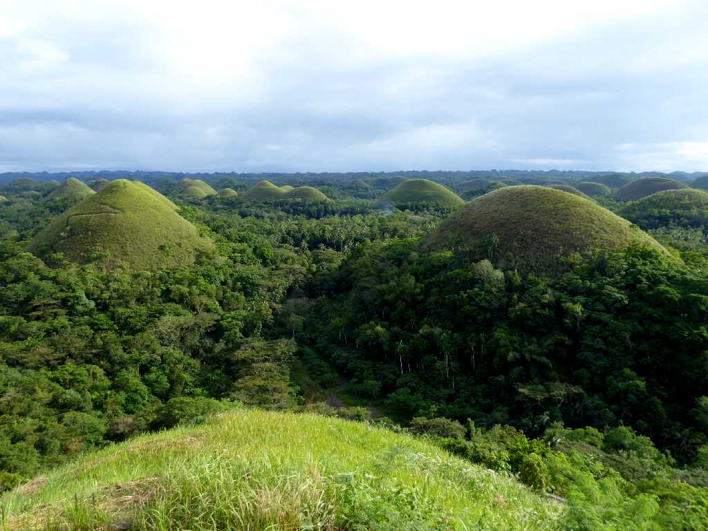
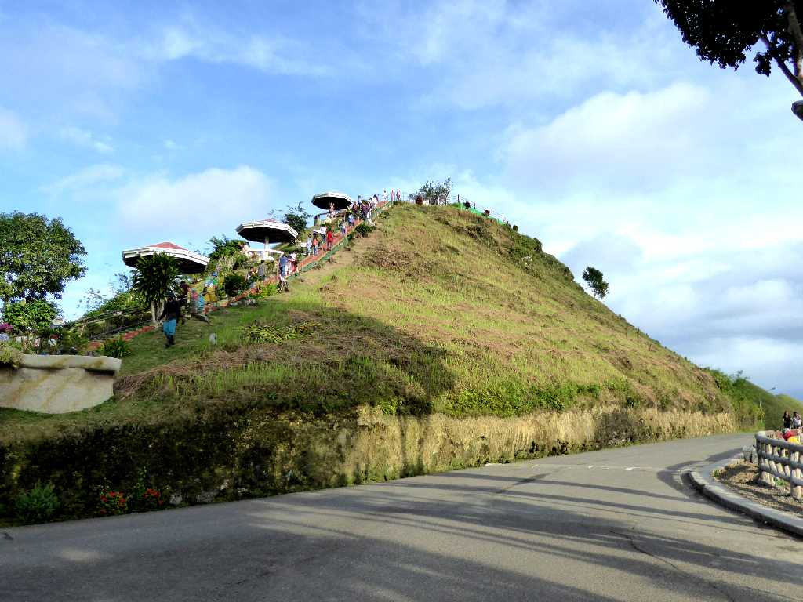
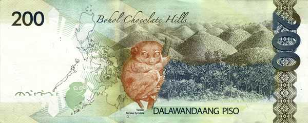

Chocolate Hills Complex Bohol Island
石灰岩で形成されたカルスト地形で５０～１００ｍ(最大１５０ｍ)ほどの円錐形の丘が１７７６連なるチョコレートヒルズは草に覆われ枯れるとチョコレート色の連山になる

View Point Chocolate Hill
January 21 2019 Chocolate Hill
雨期が明けて間もないため覆われた草が青くグリーンヒルズでした

Banknote Chocolate Hills Bohol